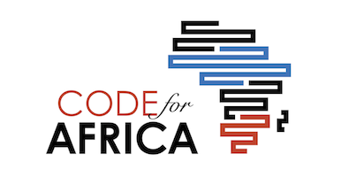

About ME
I went to Esalwa High School in the year 2008 and completed my high school studies in 2011. In 2012 september i joined Masinde Muliro University to pursue a diploma course in information and technology which i completed in 2014.
I started working at City Hall Nairobi in November 2014 as a clerk and worked for a period of 2 years. I then joined Allpack Industries Limited to work as an IT technician. I later quited to come and pursue my course on programming at Moringa School.
I decided to take a class on programing because at my job in Allpack Industries Limited they were really interested in people who are web designers. They brought in people who had degrees in the field but whatever they were producing wasn't the write standard as what the boss wanted. It made me build up an interest in knowing what all those guys were missing so that i find a way to build up a more better webpage that will be attractive andsatisfy the hiring companies like my previous work place.
